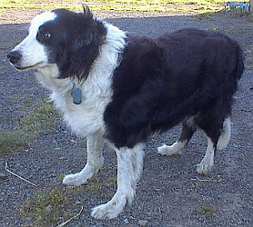

I' faîsait un temps péthissabl'ye avant hièr matîn, et j'pensis qué ch'tait un bouan jour pour clièrgi la tchèrquéthie. Quand j'tais à ramaser un tas d'vielles gâzettes qué Merayeu avait tâssé dans un coin quand oulle 'tait à netti la mansarde en cas qu' Mess Berty voudrait r'garder les Steam passer la Corbiéthe par la f'nêtre auve Souky quand i' veindra béthe du thée, j'trouvis un vièr magazine qué j'ouvris pour vaie s'y avait des “Detective Stories” dedans.
J'n'en trouvis pas, mais y'avait eune histouethe entouorre un barbi et des tchans tchi m'fit créver d'rithe. J'm'assiévis sus les limons d'la vaine et j'mé mînt à la liéthe.
I' pathaît qu' tchique bord du côté des minnes d'or au Canada y'avait un Barbi qu'avait un bieau Barber's Pole, peint avec d'la rouoge et bianche peintuthe, en d'vant d'sa Barbel'lie. I' l'en 'tait bein ordgilleux d'chu pôle-là, et nou pouvait l'vaie d'un but d'la rue à l'autre. Mais y'avait eune chose tchi l' faîsait mârri d'temps en temps – i' n'y' avait pas un tchan du vaîsiné tchi pouvait pâsser chu bieau pôle-là sans arrêter pour l' admither et l' saluer d'la maniéthe qué les tchans saluent tréjous les Telegraph Pôle dévant continuer lus c'mîns. Et i' pathaît tch'i' fait hardi caud là-bas, et san pôle né sentait pas à ieau d' colonne, et v'là tch'i n'lé mettait pas d' millieuthe humeur de vaie les femmes t'nîn lus nez en passant d'vant la Barbel'lie!
Un bouan jour il 'tait à razer un janne homme, un nouvieau v'nu dans l'vaîsiné, et quand i' falli d'li copper quand i' vit un tchan d'la carre de s'n yi marchi l'tou du pôle avec un r'gard d' admithâtion, le janne homme li d'mandit pourtchi tch'i' 'tait à faithe sèrvi san râzeux comme un bouochi, et s'i' criyait qu'il 'tait à d'biter un couochon!
Quand l'Barbi li contit ses peines, le janne homme li dit qu'il 'tait un êlectricien, et tch'i' pouvait li arrangi tchique chose pour empêchi les tchans d' saluer san pôle, le Barbi 'tait si content tch'i' voulait l'embrachia. I' li dit tch'i' li don'nait dgiex dalleurs, et tch'i' li cop'sait ses ch'veux et l' râz'zait pour rein pour le restant d'sa vie s'i' pouvait en faithe eune bouanne dgabbe.
Le lendemain au matîn, l' êlectricien arrivit avec ses ôtis et eune douzaine de pids d' ouaieur et eune p'tite piatainne de fé et s'mînt en travas. I' piéchit la piatainne au bas du pôle et attachit des ouaieurs dessus, et au pôle, et pis i' l's' am'nit dans la Barbel'lie et mînt tchique sorte dé connecteur au but avec un pleugue tch'i' pleudgit au Miteur dans la maîson, et i' l'us mîntent oprès d'la f'nêtre dans la Barbel'lie à dgetter les tchans v'nîn.
I' n'attendîtent pas longtemps. Un bieau grand tchan d'Tèrreneuve d'sendait la rue, - ordgilleux comme un Connêtablye. I' s'arrêtit au pôle comme ch'tait s'n' habitude et l'vit sa gambe de driéthe pour le saluer! I' fît un cri térriblye et r'gardit l'pôle avec er'proche et c'menchit à l' ouasser à tue-tête comme s'i' voulait l' mordre et l' dêchither en morciaux. Et pis i' s'assiévit à lé r'garder, et grattit s'n' ouothelle auve sa patte dé driéthe et s'décidit qu'y' avait tchique chose dé drôle tch'i' n'comprennait pas, et i' sé l'vit et r'touonnit sus ses pas et s'en allit sans r'garder à drouette ou à gauche auve un air de dêfiance con'v'nablye à san rang dans la famille des tchans.
Le préchain tchi vînt 'tait un p'tit Fox Terrier. I' s'en v'nait trottant comme s'i' 'tait prêssi pour s'en aller attraper des râts dans la grange, et s'arrêtit sus ses pas pour payi san respet au pôle. Quand i' c'menchit san salut, i' sautit en l'air et r'tchit sus ses hanques, - et i' faisait des brais comme s'nou 'tait à l'camailli! I' sé r'lévit et fît l'tou' du pôle deux fais et sé r'mînt en position pour saluer, mais i' changit s'n' idée car il apperchut un aut' tchan, qu'il est trèjous à s'battre avec, qui v'nait d'laut' but d'la rue.
Ch'tait un drôle de tchan, ch'ti-là, à maintchi Irish Terrier et Setteur, - un bouan batilleux. I' s'en vînt en couothant et né r'gardit même pas s'n' enn'mîn. I' s'n allit tout drait au pôle et s'mînt au salut comme un soudard. Il eut eune telle surprînse tch'i' n'savait pas s'il avait 'té fouetté ou co't'pisé! I' r'gardit l'pôle, et l'aut' tchan, et s'mînt à grînchi' ses dents et rounner comme s'i' criyait qué ch'tait d'sa faute, car ch't' aut' tchan là 'tait à lé r'garder d'un air intérêssi, - nou' s'éthait même dit tch'il avait un rit sus sa fache! Le v'là tch'i' li saute sus l'co et les v'là à lus entr'battre comme deux tigres!
Le gros tchan au Tchînquâilli, un manièthe d'Alsacien mêlé d'Heusky, touonnait justement la carre en sautant comme s'i' voulait s'mêler dans la bastaure, mais i' pathaîssait penser qu'il avait l'temps de faithe san salut d'habitude prumiéthement, et battre les deux autres oprès, et i' s'y mînt auve tout l'respet tch'il avait tréjous montré pour le pôle.
Man bouan'homme, en fit-i', du tripot, ch'ti-là! I' ouassit comme un tchan enragi deux ou trais fais, et i' r'êprouvit. Chutte fais i' s'mârrit comme i' faut et sautit sus les deux pouorres tchans qu'avaient tchitté à lus entr'battre pour lé r'garder. Lé v'la les trais qui s'en vont quédainne amont la rue, ouassant comme des fôs.
Lé prechain tchan à v'nîn 'tait un pouorre p'tit dgiâble de Poûdule qu'appartcheint à la couôtuthièthe. I' s'en vînt patinnant à p'tits pas et l'vit la patte au salut journailli. I' tchulbutit sus san nez et s'mînt à ouînner comme un mousse et print la pathe pour la quotuthethie.
Mérayeu m'criyit pour dîner d'vant qué j'pûsse fini' l'histouethe.
GEORGE D'LA FORGE
le 25 janvyi 1947
Viyiz étout: